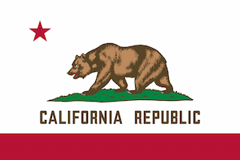

James Jaren Gurr
About Me
Hi, my name is Jaren. My wife and I and our three kids live in Victorville, california. I have fun hiking and using a telescope to watch the planets. I also like to do research in nutrition and work with electronics as a hobby. I grow some of my own food. I have taken some classes in C++. I am in school to learn more about computer programming and to learn how to do family history research. Occasionally I write poetry. I lived through the Northridge earthquake and was touched by Mount Saint Helens. I hope everyone is doing well.
Victorville, California
I'm from the state of California which is on the west coast of the United States of America. California became the 31st state in 1850. Many people came to California because of the Gold Rush between 1848 and 1855. People still come here hoping to make it big.